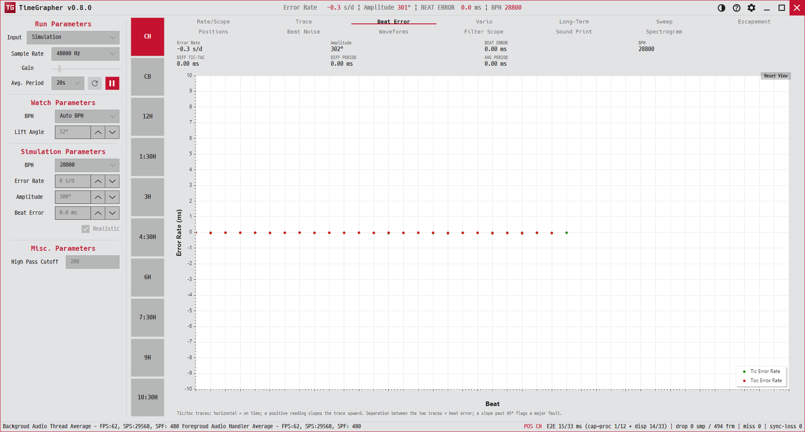

6. Beat Error
똑과 딱의 박자 비대칭(비트 오차)과 레이트가 점점 빨라지/느려지는 드리프트를 진단합니다.
Diagnoses tic/toc asymmetry (beat error) and whether the rate is drifting faster/slower over time.

용도 · Purpose
탈진기가 좌우 대칭으로 동작하는지(비트 오차), 그리고 레이트가 일정한지 가속·감속하는지를 봅니다. 비트 오차가 크면 진동의 좌우 균형이 안 맞는 것입니다.
Checks whether the escapement is left/right symmetric (beat error) and whether the rate holds steady or accelerates. Large beat error means the oscillation isn't centred.
무엇이 보이나 · What's shown
- X축X axis
- Beat — 비트 인덱스.beat index.
- Y축Y axis
- Rate Error (ms)
- 계열Series
- Tic 초록 점green dots · Toc 빨강 점red dots
- 수치판Readout
Rate · Amplitude · Beat Error · BPH · DIFF TIC-TAC · DIFF PERIOD · AVG PERIOD
경고 배너 — |비트 오차| > 0.6 ms이면 "Tic/toc separation X ms exceeds the acceptable ±0.6 ms", 기울기가 1.0 ms/beat(45°)를 넘으면 "MAJOR FAULT: trace slope … exceeds the 45° limit"가 표시됩니다.
Alert banner — if |beat error| > 0.6 ms: "Tic/toc separation … exceeds the acceptable ±0.6 ms"; if slope > 1.0 ms/beat (45°): "MAJOR FAULT: trace slope … exceeds the 45° limit".
읽는 법 · How to read
- 대칭·안정: 초록·빨강 점이 서로 겹쳐 붙어 있고 기울기가 없음.Symmetric & stable: green and red dots overlap with no slope.
- 비대칭: 초록과 빨강이 위아래로 벌어짐 = 비트 오차 큼.Asymmetric: green and red split apart = large beat error.
- 드리프트: 점들이 한쪽으로 비스듬히 기울면 가속/감속(중대 결함).Drift: dots sloping up/down = accelerating/decelerating (major fault).
비트 오차는 흔히 헤어스프링/롤러 조정으로 줄입니다. 0에 가까울수록 좋고, 보통 0.5 ms 이하를 목표로 합니다.
Beat error is usually reduced by hairspring/roller adjustment. Closer to 0 is better — typically aim for under ~0.5 ms.